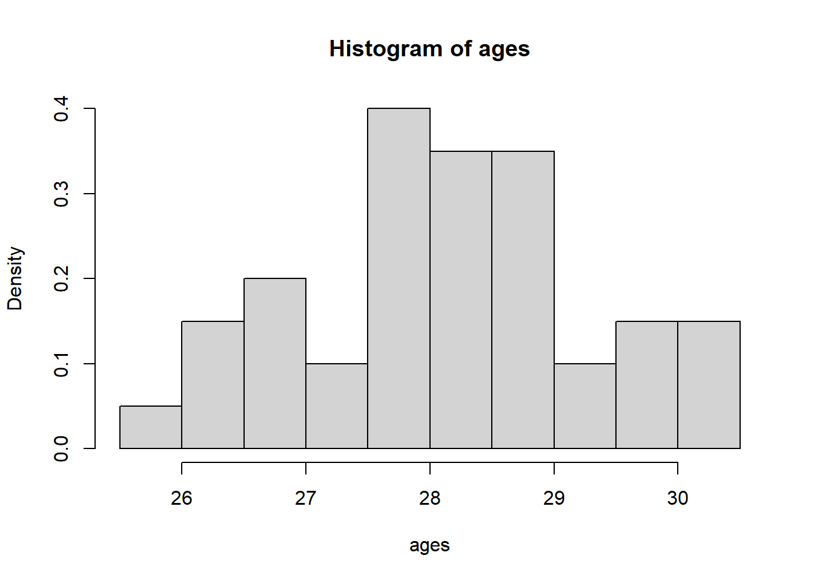
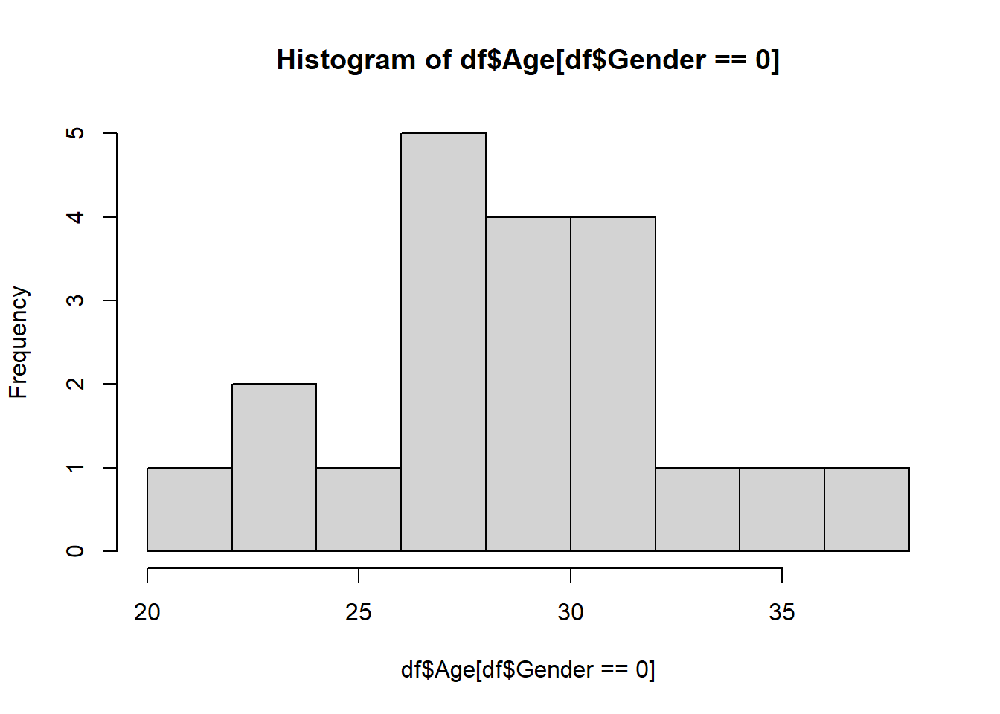
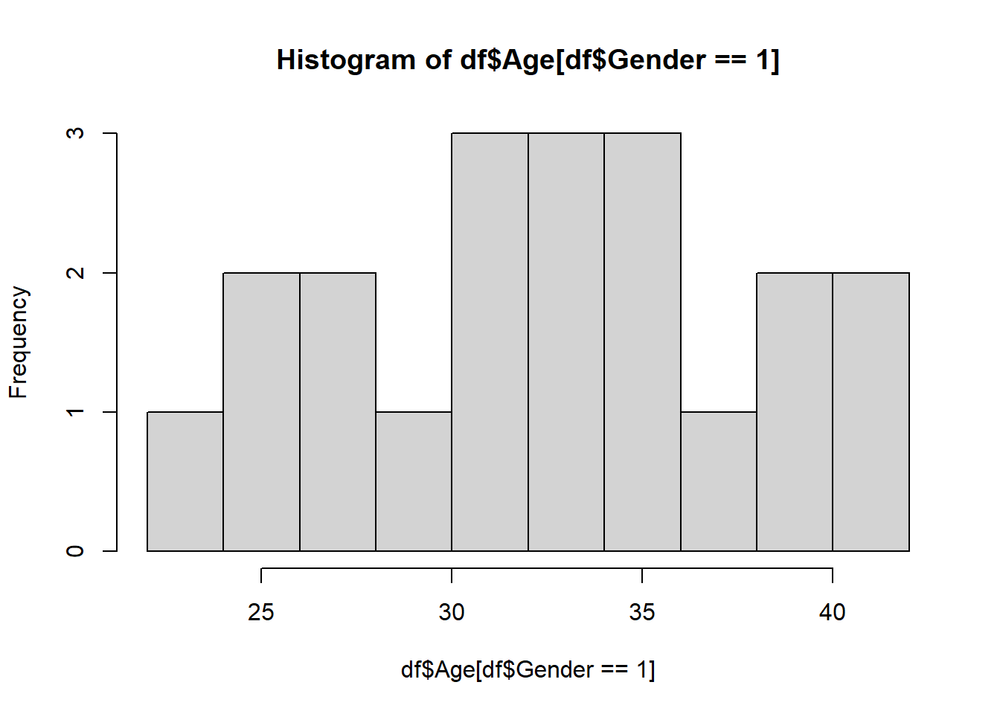
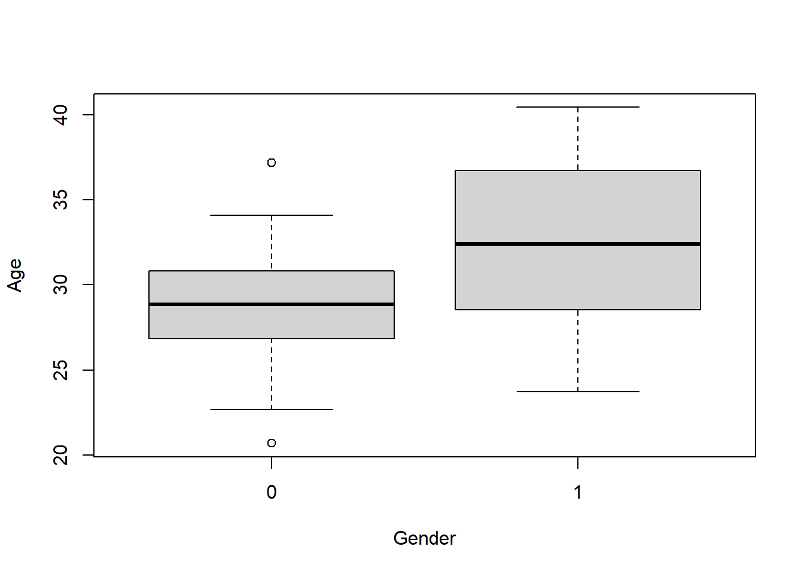

2 Review of introductory statistics
This section reviews the core machinery of introductory statistics — confidence intervals and hypothesis tests — through two fully worked examples in R. These are the tools we will lean on throughout the course: once we build a regression estimator, we will want to attach a confidence interval to it and test whether a coefficient is really nonzero, and both of those tasks use exactly the logic developed here.
The followings are some concepts that you have learned from prerequisites, and/or we have reviewed in the last two lectures.
- Sample vs. Population
- Observation vs. Random variable
- Statistic vs. Parameter
- Estimate vs. Estimator
- Estimator is a random variable and estimate is a number calculated from data
- Mean and variance of random variable
- Relationships between Normal, \(t\) , \(\chi^2\), \(F\) etc.
2.1 Basic premise of statistics
The whole purpose of statistics is to learn something about a population using only a sample of units from that population. A sample is a smaller, typically randomly selected, subset of a population. A population is a collection of units which we would like to know something about. For example, we may collect a sample of hamburgers from McDonald’s if we want to learn something about the population of McDonald’s hamburgers.
In general, at least for this course, we assume that we have access to a sample of units from a given population. Furthermore, we assume that that sample is a random sample. Specifically, we assume that these units in the sample are realizations of random variables. In addition, we also assume that these random variables are mutually independent. For example, we could assume that our sample \(X_1,\ldots,X_n\) is Normally distributed with some fixed mean \(\mu\) and fixed variance \(\sigma^2\). In this case, \(\mu\) and \(\sigma^2\) are unknown parameters of the population. A parameter of a population is some quantity that is a function of the distribution of our given sample. For instance, \({\textrm{E}}\left[X_i\right]=\mu\). Generally, we are concerned with unknown population parameters, which are parts of the distribution that are unknown, and can only ever be estimated. For example, we may know our data is normal, but not know the mean parameter. In that case, we need to use an estimate of the parameter. We use a function of the data, typically called the estimator, say \(T\), which produces the estimate, given by \(T\) computed at the sample we observed: \(T(X_1,\ldots,X_n)\).
For example, to estimate \(\mu\), we typically use the sample mean. Here, the estimate is given by \(\bar X=\sum_{i=1}^nX_i/n\). To be specific, the estimate is the value of \(\bar X\) and the estimator \(T\) is the function that maps \(n\) real numbers to their mean. In general, estimates are used to give our `best guess’ at population parameters.
This distinction trips a lot of people up, so here’s a concrete way to keep it straight: the estimator is a recipe (a formula, like “add up the numbers and divide by how many there are”), while the estimate is the dish you get out once you actually plug in ingredients. \(\bar X=\sum_{i=1}^n X_i/n\) is the recipe — it works no matter what sample you feed it, which is exactly why it’s a random variable (feed it a different sample, get a different number out). If your actual data happens to be \(2,4,6\), the estimate is the specific number \(4\). Every time you collect a new sample, the estimator stays the same rule, but the estimate it spits out will typically change.
Recall from the previous section that our estimate of a parameter is only that, an estimate. In other words, it is not exactly equal to the population parameter. For instance, if we drew a different sample our estimate would change. A confidence interval is used to acknowledge this phenomenon in the reporting of our statistics. Its used to give a range of estimates that we might have obtained from any “regular” sample we might observe. It is ultimately used to quantify the error (sometimes called uncertainty) in our estimate.
Confidence intervals consist of a level, usually denoted by \((1-\alpha)100\%\) and two end points. For example, you have learned confidence intervals for the population mean. When we say \((-1,1)\) is \(95\%\) confidence interval for the population mean, what does this mean? Colloquially, it means that we expect the sample mean to be somewhere within \((-1,1)\) with high confidence. Note that confidence intervals are computed from the data, which means also that for each new sample, we would get a different confidence interval. However, the population parameter never changes. Therefore, the interval is what is varying from sample to sample. This impacts the interpretation of a confidence interval.
Continuing our example, we have that the interval \((-1,1)\) can be interpreted as: “if we drew many more samples, 95% of the intervals will contain the population parameter.” We do not say that the parameter has a 95% chance of falling in (-1,1), since the parameter is not random, the interval end points are.
This is the single most commonly misstated idea in intro statistics, so it’s worth slowing down on. Imagine the true (unknown, fixed) population mean is \(\mu=170\)cm. You draw a sample and compute a 95% CI of \((168,172)\) — it happens to contain \(170\). A colleague draws a different sample from the same population and gets \((171,174)\) — it happens to miss \(170\). The number \(170\) never moved; it’s a fixed constant. What moved was the interval, because it was built from random data. “95% confidence” describes the procedure: if you repeated this sampling-and-interval-building process over and over, about 95% of the resulting intervals would happen to capture the true \(\mu\). It does not mean “there’s a 95% chance \(\mu\) is in this one particular interval you already computed” — \(\mu\) either is or isn’t in it; there’s no probability left once the interval is drawn.
For example, we have the formula for a confidence interval for the population mean is given by: \(\bar X\pm 1.96\hat\sigma\). Notice that it is based only on the data. Therefore, it will change if we drew a new sample.
Suppose we take a random sample of \(n=25\) packages from a shipping company and weigh each one. We find a sample mean weight of \(\bar X=52\) kg. Assume the population standard deviation is known to be \(\sigma=10\) kg (in practice we’d rarely know \(\sigma\) exactly, but this keeps the arithmetic simple — we’ll switch to the estimated \(\hat\sigma\) and a \(t\)-distribution once we get to the worked \(R\) examples below). Construct a 95% confidence interval for the true mean package weight \(\mu\).
Solution. The standard error of \(\bar X\) is \[\textrm{SE}(\bar X)=\frac{\sigma}{\sqrt n}=\frac{10}{\sqrt{25}}=\frac{10}{5}=2.\] For a 95% confidence level, the relevant multiplier is \(1.96\) (this comes from the standard Normal distribution: 95% of its probability lies within \(\pm1.96\) of 0). So the margin of error is \[1.96\times \textrm{SE}(\bar X)=1.96\times 2=3.92.\] The confidence interval is therefore \[\bar X\pm 3.92 = 52\pm 3.92 = (48.08,\ 55.92).\] Interpretation: we are 95% confident that the true mean package weight \(\mu\) lies between 48.08 kg and 55.92 kg. More precisely, if we repeated this sampling process many times, about 95% of the intervals we’d construct this way would contain the true \(\mu\) — the number \(52\) that we plugged in is just one sample’s estimate, and would be different for a different sample of 25 packages.
To summarize this section, a confidence interval is used to quantify the uncertainty in our reported estimates. By uncertainty, we specifically mean the uncertainty resulting from the fact that we have only a sample of the population, and our estimate varies depending on the sample.
2.2 Hypothesis tests
Hypothesis tests are used to determine whether an effect is spurious or a real property of the population. A spurious effect is one that is specific to the sample we observed, and is not a real property of the population. For example, if the heights of males and female students are measured, and we observe that the sample mean of both male and females are equal, then this would be a spurious effect. We know that the population heights of males and females are substantially different. If we drew a new sample, we would likely observe something that mirrors the population reality (provided it is large enough).
Formally, a hypothesis test compares two competing beliefs about a population parameter, called the null and alternative hypothesis. For instance, we may wish to test whether the population heights of men is greater than women, vs. the heights being less than or equal to that of men.
We write this as follows: \(H_0\colon \mu_{men}\leq \mu_{women}\) vs. \(H_a\colon \mu_{men}> \mu_{women}\).
The null hypothesis is usually chosen to be one such that if we make a mistake, the error is most serious. However, it is usually clear from the context.
Think of the null hypothesis \(H_0\) as “innocent until proven guilty.” We start by assuming \(H_0\) is true (the defendant is innocent, or here, there’s no effect), and only abandon that assumption if the data provides strong enough evidence against it — just like a jury only convicts if the evidence is beyond a reasonable doubt. This is why “fail to reject \(H_0\)” is not the same as “\(H_0\) is proven true” — a jury verdict of “not guilty” doesn’t mean innocence was proven, only that there wasn’t enough evidence to convict. Maybe there really is no effect, or maybe there is one but our sample was too small or too noisy to detect it.
In general, we compute a test statistic and its distribution under the null hypothesis. Then we compute how likely it was to see the observed test statistic we saw, if the null hypothesis was true. This likelihood is given by the p-value. If it was sufficiently unlikely (in other words, the p-value is less than the threshold \(\alpha\)), then we reject the null hypothesis. Otherwise, we fail to reject the null hypothesis. If we fail to reject the null hypothesis then either the null hypothesis is true, it is not true, but there was not enough data collected to show the effect.
A p-value answers one specific question: “if the null hypothesis were true, how surprising would data like ours be?” A small p-value (say, \(0.001\)) means our observed test statistic would be quite rare under \(H_0\) — so rare that it’s more believable that \(H_0\) is simply false than that we got a fluke sample. A large p-value (say, \(0.6\)) means our data looks perfectly ordinary under \(H_0\) — nothing here demands an explanation beyond “no real effect.” A common misreading is to treat the p-value as “the probability \(H_0\) is true” — it is not that; it’s a probability about the data, computed by assuming \(H_0\), not a probability about the hypothesis itself.
There are two types of errors we can make in a hypothesis test: Type 1 and Type 2 error. Type one error occurs when we reject the null hypothesis when it is true. Type two error occurs when we fail to reject the null hypothesis when the alternative is true.
Back to the courtroom: a Type 1 error is convicting an innocent person (rejecting \(H_0\) when it’s actually true) — a “false alarm.” A Type 2 error is letting a guilty person go free (failing to reject \(H_0\) when the alternative is actually true) — a “missed detection.” These two error types trade off against each other: making the conviction threshold stricter (smaller \(\alpha\)) reduces Type 1 errors, but makes it easier for a real effect to slip through undetected (more Type 2 errors). Which error is worse depends entirely on context — for a new drug’s side effects, a false alarm (Type 1) might be much less costly than missing a real danger (Type 2); for a criminal trial, most legal systems explicitly prioritize avoiding Type 1 errors.
| \(H_0\) actually true | \(H_0\) actually false | |
|---|---|---|
| Reject \(H_0\) | Type 1 error | Correct |
| Fail to reject \(H_0\) | Correct | Type 2 error |
A cereal company claims that its boxes contain, on average, \(\mu_0=500\) grams of cereal. A consumer group weighs a random sample of \(n=36\) boxes and finds a sample mean of \(\bar X=494\) grams, with sample standard deviation \(\hat\sigma=18\) grams. Test, at \(\alpha=0.05\), whether the true mean box weight differs from 500 grams.
Solution. We set up the hypotheses: \[H_0\colon \mu=500 \qquad \text{vs.}\qquad H_1\colon \mu\neq 500.\] Since \(n=36\) is reasonably large, we can treat the test statistic as approximately standard Normal under \(H_0\) (equivalently, a \(t_{35}\) distribution, which is very close to Normal for this many degrees of freedom): \[z=\frac{\bar X-\mu_0}{\hat\sigma/\sqrt n}=\frac{494-500}{18/\sqrt{36}}=\frac{-6}{18/6}=\frac{-6}{3}=-2.\] Our observed test statistic is \(-2\), meaning the sample mean is 2 standard errors below the claimed value.
The p-value is the probability of seeing a test statistic at least this extreme (in either direction), if \(H_0\) were true: \[p\text{-value}=2\times P(Z\leq -2)=2\times 0.0228=0.0456.\] (Here \(0.0228\) is the standard Normal lower-tail probability at \(-2\), read off a \(Z\)-table or computed with pnorm(-2) in R.)
Since \(0.0456<\alpha=0.05\), we reject \(H_0\) — though only just, since the p-value is close to the threshold. There is evidence, though not overwhelming evidence, that the true mean box weight differs from the claimed 500 grams; in particular, since \(\bar X<500\), the data suggests boxes are on average underfilled.
We can double check this with the confidence-interval method: a 95% CI for \(\mu\) is \[\bar X\pm 1.96\times \frac{\hat\sigma}{\sqrt n}=494\pm 1.96\times 3=494\pm 5.88=(488.12,\ 499.88).\] Since the claimed value \(500\) falls just outside this interval, we again reject \(H_0\colon \mu=500\) — consistent with the p-value calculation above.
Let’s do an example.
Exercise 2.7 In a study about online dating, you are interested in determining the average age of individuals who use online dating platforms. You want to know whether the average age of online daters is significantly different from 30. You have a dataset of 40 ages of people using online dating platforms.
How would you answer this question?
\[H_0\colon \mu=30\qquad vs. \qquad H_1\colon \mu\neq 30.\]
First, we can explore the data:
getwd()[1] "C:/Users/12RAM/OneDrive - York University/Teaching/Courses/Math 3330 Regression/Math 3330 Notes"ages=read.csv('C:\\Users\\12RAM\\OneDrive - York University\\Teaching\\Courses\\Math 3330 Regression\\Lecture Codes\\Data\\dating_ages.csv')[,2]
hist(ages,freq=F)
Now, assume that \(X_1,\ldots, X_{40}\sim \mathcal{N}(\mu,\sigma^2)\), and independent. (We can justify normality with the histogram, or we could also invoke the CLT to get normality of the sample mean (not the data itself).) Therefore, we can do a one sample \(t\)-test. Recall that, under the null hypothesis, we have \(\frac{\bar X-30}{\hat\sigma/\sqrt{n}}\sim t_{n-1}\). This means that if \(\left|\frac{\bar X-30}{\hat\sigma/\sqrt{n}}\right|\geq t_{n-1,1-\alpha/2}\), then we reject the null hypothesis! Here, \(t_{n-1,1-p}\) is the \((1-p)\)th quantile of the \(t_{n-1}\) distribution. For large \(n\) and \(p=0.025\), this is roughly equal to 2.
Now, recall that \[ H_0\colon \mu=30\qquad vs. \qquad H_1\colon \mu\neq 30 .\]
# Calculate the mean of the 'ages' data and assign it to xbar
xbar = mean(ages)
xbar # Print the mean[1] 28.16378# Calculate the variance of the 'ages' data and assign it to ssq
ssq = var(ages)
ssq # Print the variance[1] 1.277377# Calculate the length (number of observations) of the 'ages' data and assign it to n
n = length(ages)
n # Print the number of observations[1] 40# Set the significance level
alpha = 0.05
# print test statistic
ts=(xbar -30)/(sqrt(ssq/n))
print(ts)[1] -10.27532# compute p-value
pval=pt(ts,n-1)*2
pval[1] 1.179149e-121.179149e-12 is not “1.179149 times 12” — the e-12 means “times \(10^{-12}\),” i.e., move the decimal point 12 places to the left. So this number is \(0.000000000001179149\), an extremely small number, not something close to 1 or 12. As a rule of thumb, e-12, e-08, etc. (negative exponent) mean “very small, close to zero,” while e+08 or e08 (positive exponent) would mean “very large.” Misreading this is an easy way to draw the exact opposite conclusion about how much evidence you have against \(H_0\).
# Perform a two-sided t-test to check if the mean of 'ages' is significantly different from 30
# t.test() is the function for performing t-tests in R
test = t.test(ages, mu = 30, alternative = 'two.sided')
test # Print the test result
One Sample t-test
data: ages
t = -10.275, df = 39, p-value = 1.179e-12
alternative hypothesis: true mean is not equal to 30
95 percent confidence interval:
27.80232 28.52524
sample estimates:
mean of x
28.16378 We have that \(\left|\frac{\bar X-30}{\hat\sigma/\sqrt{n}}\right|=10.28\). Using R, we get that the p-value is \(1.179\times 10^{-12}\).
Here the p-value measures how much evidence there is against the null hypothesis. If the p-value is very small, then this constitutes strong evidence against the null hypothesis. If the p-value is small, but closer to 0.05, then there is evidence against the null. If it is larger, but still small, say 0.1, then this is weak evidence against the null hypothesis. It is not helpful to throw it away if it is above 0.05, therefore we should not just take \(\alpha=0.05\). Choosing \(\alpha\) depends on how serious a type 1 error is. If it is not that serious, we can take \(\alpha\) larger. If it is very serious, we can take \(\alpha\) smaller.
In this example, there is very strong evidence against the null hypothesis.
A tiny p-value tells you the observed difference is unlikely to be due to chance alone — it does not tell you the difference is large or meaningful in real-world terms. Here, the sample mean age is \(28.16\), which is statistically significantly different from \(30\) (p is minuscule), but a gap of under 2 years might not matter at all for whatever decision prompted the question. With a large enough sample size, even a tiny, practically irrelevant difference can produce a very small p-value, since larger \(n\) makes the test statistic more sensitive to any nonzero difference. Always look at the size of the estimated effect (and its confidence interval) alongside the p-value, not the p-value alone.
Note also that we can use the confidence interval method with \[ \bar X\pm t_{n-1,1-\alpha/2}\sqrt{\hat\sigma^2/n}.\]
# Alternative method to calculate the confidence interval
# ci will store the confidence interval values
ci = xbar + c(-1, 1) * qt(1 - alpha / 2, n - 1) * sqrt(ssq / n)
ci # Print the confidence interval[1] 27.80232 28.52524Moving beyond the one-sample testing problem, we might be interested in other population parameters, say \(\theta\in \Theta\). Think Lecture 1: \({\textrm{E}}\left[Y|X\right]=\beta_0+X\beta_1\), we might want to estimate \({\textrm{E}}\left[Y|X\right]\), which amounts to \(\beta_0,\beta_1\in \mathbb{R}\)! In general, we may estimate \(\theta\) by \(\hat\theta\). Then we may compute the variance and distribution of \(\hat\theta\). From there, we can make confidence intervals and conduct hypothesis tests etc.
Nothing new is happening conceptually here — we’re still doing the same “assume \(H_0\), see how surprising the data is” procedure. The only change is that our parameter of interest, \(\Delta=\mu_1-\mu_2\), is now a difference of two means instead of a single mean. Once we know how to find the distribution of \(\hat\Delta=\bar X-\bar Y\) (the natural estimator of \(\Delta\)), everything else — the test statistic, the p-value, the confidence interval — follows exactly the same recipe as the one-sample case above.
A teacher wants to know whether two different study methods lead to different average test scores. Method A is used by \(n_1=10\) students, giving sample mean \(\bar X=78\) and sample variance \(\hat\sigma_1^2=25\). Method B is used by \(n_2=12\) students, giving sample mean \(\bar Y=82\) and sample variance \(\hat\sigma_2^2=36\). Assume both populations are Normal with a common (but unknown) variance \(\sigma^2\). Test \(H_0\colon \Delta=\mu_1-\mu_2=0\) vs. \(H_1\colon \Delta\neq 0\) at \(\alpha=0.05\).
Solution. First we pool the two sample variances into a single estimate of the common \(\sigma^2\), weighting each by its degrees of freedom: \[\hat\sigma_p^2=\frac{(n_1-1)\hat\sigma_1^2+(n_2-1)\hat\sigma_2^2}{n_1+n_2-2}=\frac{(9)(25)+(11)(36)}{10+12-2}=\frac{225+396}{20}=\frac{621}{20}=31.05.\]
Next, the test statistic is \[t=\frac{\bar X-\bar Y}{\hat\sigma_p\sqrt{1/n_1+1/n_2}}=\frac{78-82}{\sqrt{31.05}\sqrt{1/10+1/12}}=\frac{-4}{5.572\times\sqrt{0.1833}}=\frac{-4}{5.572\times 0.4282}=\frac{-4}{2.386}\approx -1.677.\]
This statistic follows a \(t_{n_1+n_2-2}=t_{20}\) distribution under \(H_0\). The critical value for a two-sided test at \(\alpha=0.05\) with 20 degrees of freedom is \(t_{20,0.975}\approx 2.086\). Since \(|{-1.677}|=1.677<2.086\), we fail to reject \(H_0\): this sample does not provide strong enough evidence, at the 5% level, that the two study methods lead to different average scores (even though the observed sample means, 78 vs. 82, do differ numerically — with only 10 and 12 students per group, that gap is well within what we’d expect from sampling variability alone).
Equivalently, using the confidence-interval method, a 95% CI for \(\Delta=\mu_1-\mu_2\) is \[(\bar X-\bar Y)\pm t_{20,0.975}\,\hat\sigma_p\sqrt{1/n_1+1/n_2}=-4\pm 2.086\times 2.386=-4\pm 4.977=(-8.98,\ 0.98).\] Since this interval contains 0, we again fail to reject \(H_0\colon \Delta=0\).
Let’s do another example:
Exercise 2.8 In a study about online dating, you are interested in determining if the average age of those who identify as men who use online dating platforms differs from those who identify as women. You have a dataset of 20 ages of each group using online dating platforms.
What is the population parameter of interest here? It is \(\Delta=\mu_{1}-\mu_2\), the difference in means between the two populations. Now, suppose that \(X_1,\ldots, X_{20}\sim \mathcal{N}(\mu_1,\sigma^2)\) and \(Y_1,\ldots, Y_{20}\sim \mathcal{N}(\mu_2,\sigma^2)\), and are mutually independent. (We could also invoke the CLT instead of assuming normality.) We can estimate those parameters with estimates. For instance, \(\bar X,\ \bar Y\), \[\hat\sigma^2=\frac{(n_1-1)\hat\sigma_1^2+(n_2-1)\hat\sigma_2^2}{n_1+n_2-2}.\]
Exercise 2.9 Suppose that \(X_1,\ldots, X_{20}\sim \mathcal{N}(\mu_1,\sigma^2)\) and \(Y_1,\ldots, Y_{20}\sim \mathcal{N}(\mu_2,\sigma^2)\), and are mutually independent. Compute \({\textrm{Var}}\left[\bar X-\bar Y\right]\).
Solution 2.3. Using independence of \(\bar X\) and \(\bar Y\) and the result of the Exercise 2.6 , we have that \[{\textrm{Var}}\left[\bar X-\bar Y\right]={\textrm{Var}}\left[\bar X\right]+{\textrm{Var}}\left[\bar Y\right]=\sigma_1^2/n_1+\sigma_1^2/n_2.\]
First, we write down the null and alternative hypothesis: \[H_0\colon \Delta=0\qquad vs.. \qquad H_1\colon \Delta\neq 0.\] Here, we can do a two sample \(t\)-test.
Recall that the pooled variance is given by: \[\hat\sigma_p^2=\frac{(n_1-1)\hat\sigma_1^2+(n_2-1)\hat\sigma_2}{(n_1+n_2-2)}\] We previously said that a multiple of a one sample standard deviation follows a Chi-squared distribution. It follows that \((n_1-1)\hat\sigma_1^2/\sigma^2\sim \chi^2_{n_1-1}\) and \((n_2-1)\hat\sigma_2^2/\sigma^2\sim \chi^2_{n_2-1}\). Using the theory from here, specifically, \((n_1-1)\hat\sigma_1^2/\sigma^2+(n_2-1)\hat\sigma_2^2/\sigma^2\) is a sum of independent Chi-squared random variables, and so we have \((n_1-1)\hat\sigma_1^2/\sigma^2+(n_2-1)\hat\sigma_2^2/\sigma^2\sim \chi^2_{n_1+n_2-2}\).
Again, using the theory from here, under the null hypothesis, we have that \[\frac{\bar X-\bar Y}{\hat\sigma_p\sqrt{1/n_1+1/n_2}}=\frac{(\bar X-\bar Y)/\sigma\sqrt{1/n_1+1/n_2}}{\hat\sigma_p/\sigma}\sim t_{n_1+n_2-2}.\]
This follows from 3 facts, first, letting \(Z=(\bar X-\bar Y)/\sqrt{{\textrm{Var}}\left[\bar X-\bar Y\right]}\), note that \(Z\sim \mathcal{N}(0,1)\). We have that \[Z=(\bar X-\bar Y)/\sqrt{{\textrm{Var}}\left[\bar X-\bar Y\right]}=(\bar X-\bar Y)/\sigma\sqrt{1/n_1+1/n_2}.\]
Next, we said earlier that \(\bar X\) is independent of \(\hat\sigma_1\) and \(\bar Y\) is independent of \(\hat\sigma_2\). Now, recall that if two random variables are independent, then any function of them is also independent. In other words, if \(X\) and \(Y\) are independent, then for real functions \(f\) and \(g\), we have that \(g(X)\) is independent of \(f(Y)\). It follows that \(\bar X\) is independent of \(\hat\sigma_2\) and \(\bar Y\) is independent of \(\hat\sigma_1\). It follows that \(\bar X-\bar Y\) is independent of \(\hat\sigma_p\). Then, \[\frac{(\bar X-\bar Y)/\sigma\sqrt{1/n_1+1/n_2}}{\hat\sigma_p/\sigma}\] is a ratio of a standard normal random variable and the square root of a Chi-squared random variable, divided by its degrees of freedom. Further, the numerator and denominator are independent. Therefore, the above quantity follows a \(t\) distribution with \(n_1+n_2-2\) degrees of freedom.
This means that if \(\left|\frac{\bar X-\bar Y}{\hat\sigma_p\sqrt{1/n_1+1/n_2}}\right|\geq t_{n_1+n_2-2,1-\alpha/2}\), then we reject the null hypothesis.
Let’s execute the test in R:
# Normally, I will give you a dataset. Here I generate the data
set.seed(440)
female_ages=rnorm(20,28,4)
male_ages=rnorm(20,32,4)
# Check for equal variance
var(female_ages)[1] 15.72805var(male_ages)[1] 26.22371# Putting the data in a dataframe
cbind("Age"=c(female_ages,male_ages),"Gender"=rep(c(0,1),each=20)) Age Gender
[1,] 37.19809 0
[2,] 20.69693 0
[3,] 27.80284 0
[4,] 27.69463 0
[5,] 29.53143 0
[6,] 29.46190 0
[7,] 30.41164 0
[8,] 33.27790 0
[9,] 22.65974 0
[10,] 30.73540 0
[11,] 34.08564 0
[12,] 27.58077 0
[13,] 23.26108 0
[14,] 30.94523 0
[15,] 31.52404 0
[16,] 29.13246 0
[17,] 26.95470 0
[18,] 24.80749 0
[19,] 28.60051 0
[20,] 26.76294 0
[21,] 25.94775 1
[22,] 40.16080 1
[23,] 25.58905 1
[24,] 32.16780 1
[25,] 29.87934 1
[26,] 35.46593 1
[27,] 35.71651 1
[28,] 37.76510 1
[29,] 27.23068 1
[30,] 33.41994 1
[31,] 40.43822 1
[32,] 31.04841 1
[33,] 32.66165 1
[34,] 38.28678 1
[35,] 34.72411 1
[36,] 39.57994 1
[37,] 26.85585 1
[38,] 31.87533 1
[39,] 23.71793 1
[40,] 30.54803 1df=data.frame(cbind("Age"=c(female_ages,male_ages),"Gender"=rep(c(0,1),each=20)))
#exploring the data
#hist(x) creates a histogram of the vector x
hist(df$Age[df$Gender==0])
hist(df$Age[df$Gender==1])
#boxplot creates boxplots of Age against gender
boxplot(Age~Gender, df)
test=t.test(Age~Gender,data=df,var.equal=TRUE)
test
Two Sample t-test
data: Age by Gender
t = -2.7603, df = 38, p-value = 0.008841
alternative hypothesis: true difference in means between group 0 and group 1 is not equal to 0
95 percent confidence interval:
-6.929630 -1.065749
sample estimates:
mean in group 0 mean in group 1
28.65627 32.65396 #Interpret the P value, and CI, what are we going to say to a stakeholder?
#e.g.
test$estimatemean in group 0 mean in group 1
28.65627 32.65396 Note also that we can use the confidence interval method, meaning that if if 0 is in the interval: \[ \hat\Delta\pm t_{n_1+n_2-2,1-\alpha/2}\hat\sigma_p\sqrt{1/n_1+1/n_2},\] then we fail to reject the null hypothesis.
- A confidence interval quantifies sampling uncertainty in an estimate; the randomness lives in the interval, not in the fixed, unknown population parameter.
- A hypothesis test starts by assuming \(H_0\) is true, then asks how surprising the observed data would be under that assumption — that surprise level is the p-value.
- A small p-value is evidence against \(H_0\), not a probability that \(H_0\) is true.
- Type 1 error (false alarm: rejecting a true \(H_0\)) and Type 2 error (missed detection: failing to reject a false \(H_0\)) trade off against each other, and which one matters more depends on context.
- Two-sample tests (comparing \(\mu_1\) vs. \(\mu_2\)) use exactly the same logic as one-sample tests, just applied to the difference \(\Delta=\mu_1-\mu_2\).
Exercise 2.10 IBM Human Resources (HR) department is evaluating job applicants from York University.
They are interested to know if the 2020 ITEC graduating class has an average GPA higher than 6 (i.e. average GPA higher than ``B’’). They collected the GPA of 25 ITEC students graduated in 2020.
| 4.92 | 4.79 | 6.76 | 5.64 | 6.12 | 7.37 | 6.45 | 6.31 | 6.68 |
|---|---|---|---|---|---|---|---|---|
| 6.30 | 4.91 | 6.95 | 5.87 | 6.18 | 6.60 | 6.71 | 6.69 | 5.62 |
| 6.40 | 5.51 | 6.44 | 6.13 | 8.55 | 7.94 | 4.78 | - | - |
Use chatGPT to convert the above table to an R vector, so you don’t have to waste time!
- For the one sample testing problem, i.e., you have a sample of \(n\) normal random variables, with unknown mean and variance and you want to test whether \(H_0\colon \mu=0\) vs. \(H_0\colon \mu\neq 0\), show that \(\frac{\bar X}{\hat\sigma/\sqrt{n}}\sim t_{n-1}\) under the null hypothesis, assuming the observations are normally distributed.
- What is the distribution of each of the following: \(\bar X,\hat\sigma^2\) (sample mean and sample variance) under the assumption of normal data with unknown mean and variance?
Compare and contrast the following concepts. That is, define them and explain the difference between them.
- Sample vs. Population
- Observation vs. Random variable
- Statistic vs. Parameter
- Estimate vs. Estimator
2.3 Check Your Understanding
Review your material and complete the above exercises before continuing to the next section. The questions below are a quick self-check on the material from this page — try each one, then click Show answer to check yourself.
Question 1. A 90% confidence interval for the average commute time of employees at a company is \((22,28)\) minutes. Which of the following is a correct interpretation? (a) There’s a 90% chance the true average commute time is between 22 and 28 minutes. (b) If we repeated this sampling procedure many times, about 90% of the resulting intervals would contain the true average commute time.
Show answer
(b). The true average commute time is a fixed (though unknown) number — it either is or isn’t in \((22,28)\), so it doesn’t make sense to assign it a probability. It’s the interval’s endpoints that are random, varying from sample to sample, which is exactly what statement (b) describes.
Question 2. A researcher tests \(H_0\colon \mu=0\) vs. \(H_1\colon \mu\neq0\) and gets a p-value of \(0.03\). Using \(\alpha=0.05\), what do they conclude? What does the p-value of \(0.03\) actually represent?
Show answer
Since \(0.03<0.05\), they reject \(H_0\). The p-value of \(0.03\) means: if \(H_0\) were actually true (true mean is 0), there would only be a 3% chance of observing a test statistic at least as extreme as the one actually observed. That’s unlikely enough to conclude \(H_0\) is probably false — it is not the probability that \(H_0\) itself is true.
Question 3. A factory’s quality control test has \(H_0\colon\) “the product is safe” vs. \(H_1\colon\) “the product is defective.” Which type of error (Type 1 or Type 2) is more serious here, and why?
Show answer
Type 2 error (failing to reject \(H_0\) — i.e., concluding the product is safe — when it’s actually defective) is generally far more serious here, since it means a genuinely dangerous product reaches consumers. A Type 1 error (flagging a safe product as defective) is costly but not dangerous. In practice this would push a company toward a testing procedure that is more sensitive to detecting defects, even at the cost of more false alarms.
Question 4. True or False: failing to reject \(H_0\) proves that \(H_0\) is true. Explain.
Show answer
False. Failing to reject \(H_0\) only means the data didn’t provide strong enough evidence against it — it could be that \(H_0\) really is true, or that it’s false but the effect was too small or the sample too small/noisy to detect it. It is never proof that \(H_0\) is true, the same way a “not guilty” verdict doesn’t prove innocence.
Question 5. In the two-sample dating-age example on this page, why can we use a \(t\)-distribution (rather than, say, a Normal distribution) for the test statistic \(\frac{\bar X-\bar Y}{\hat\sigma_p\sqrt{1/n_1+1/n_2}}\)?
Show answer
Because the true variance \(\sigma^2\) is unknown and had to be estimated (via the pooled variance \(\hat\sigma_p^2\)) from the data. Dividing a standard Normal by an independent, estimated standard deviation is exactly the situation that produces a \(t\)-distribution rather than a Normal — the extra uncertainty from estimating \(\sigma^2\) widens the tails compared to a Normal.
Question 6. A 95% confidence interval for \(\mu\) turns out to be \((1.2, 4.8)\). Without redoing any calculations, what can you immediately conclude about a two-sided test of \(H_0\colon \mu=0\) vs. \(H_1\colon \mu\neq 0\) at \(\alpha=0.05\)?
Show answer
We would reject \(H_0\). The confidence-interval method mentioned on this page says: fail to reject \(H_0\colon\mu=\mu_0\) at level \(\alpha\) exactly when \(\mu_0\) falls inside the \((1-\alpha)100\%\) confidence interval. Since \(0\) is not inside \((1.2,4.8)\), the test rejects \(H_0\colon\mu=0\) — no need to recompute the test statistic or p-value from scratch.